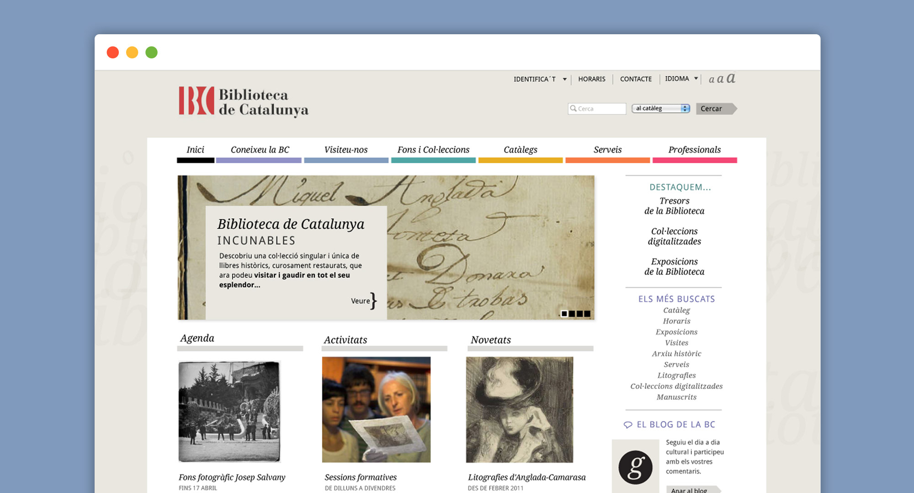

A visual design proposal for the National Library of Catalonia's website
Designed at http Comunicació. Barcelona 2012
Skills: Visual Design, Art Direction.

About the project
My role for this proposal was styling a new user interface starting for a given wireframes. I focused on designing a clean interface that allow users to access easily to the content.